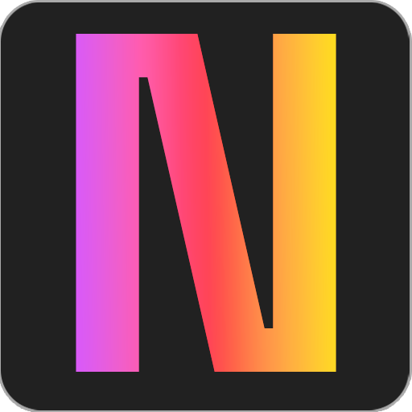

Tu workspace mínimo. Notas, imágenes y tareas organizados en un solo lugar, con sincronización en tiempo real y cero dependencias.
Ingresar a la appEditor de texto rico con H1, H2, negrita, cursiva, subrayado, listas, checkbox y alineación. Layout masonry con tarjetas que se auto-guardan. Múltiples instancias para mantener todo separado.
Galería con grid masonry, vista previa en modal a tamaño completo y edición de títulos. Agregá imágenes por URL al instante.
Tareas con edición inline, prioridades con color, fechas límite, drag & drop para reordenar y barra de progreso. Vista de tabla y kanban intercambiables.
Sin frameworks, sin bundler, sin dependencias. HTML, CSS y JavaScript puro con ES Modules importados directamente desde CDN. Ligero, rápido y fácil de entender.
HTML5 CSS3 ES ModulesPowered por Firebase Auth y Firestore. Tus datos se sincronizan instantáneamente. El indicador de sync te da feedback visual cada vez que se escribe en la base de datos.
Firebase Auth Firestore onSnapshotDark mode por defecto con toggle a light mode. Tipografía Space Grotesk + Inter. Grid de puntos sutil, bordes neón y transiciones suaves. Responsive para desktop y mobile.
Dark/Light Responsive CSS VarsPrioridades con indicador de color (rojo, amarillo, verde), fechas límite con aviso de vencimiento, edición de texto inline con doble click, reordenado por arrastre en la tabla y barra de progreso que muestra tareas completadas en tiempo real.
Prioridades Fechas Drag & drop ProgresoCódigo disponible en GitHub bajo licencia CC BY-NC 4.0. Podés ver cómo está hecho, aprender de la implementación o forkear para tu propio proyecto.
CC BY-NC 4.0 GitHub